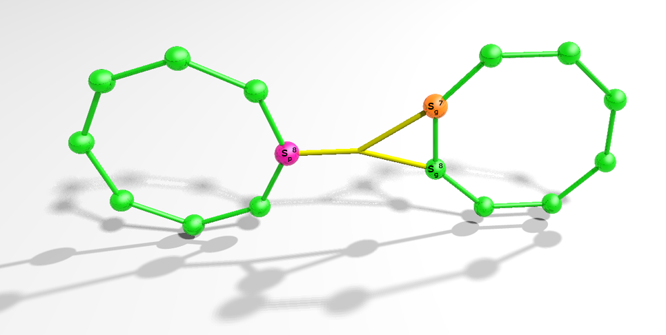
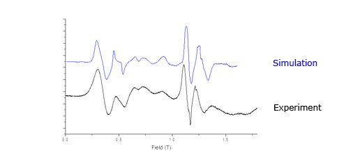
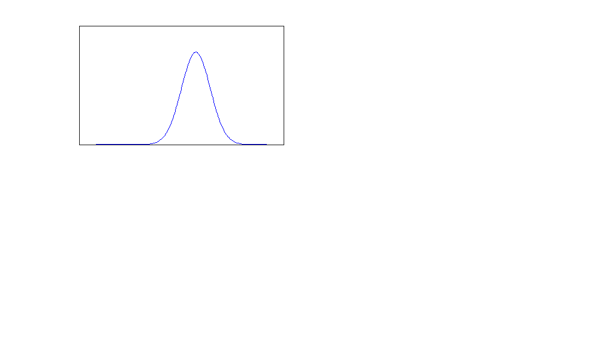
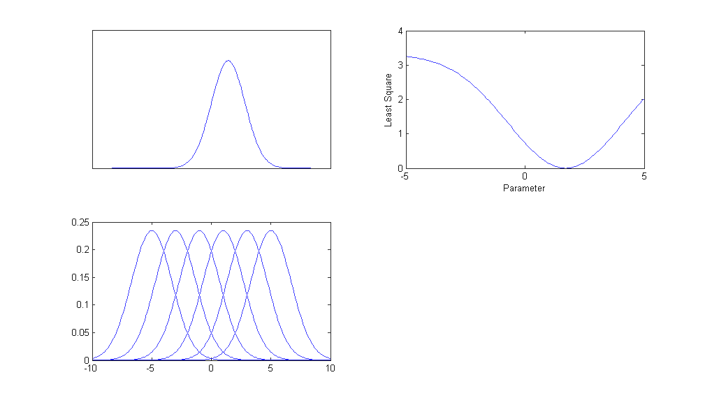

H = Hp + Hg + Hpg
Hpg = J'sp8 · (sg7 + sg8)
Dimension of Hilbert space for Cr7Ni-Cr7Ni is 2,415,919,104
Modelling dimer systems

H = Hp + Hg + Hpg
Hpg = J'sp8 · (sg7 + sg8)
Dimension of Hilbert space for Cr7Ni-Cr7Ni is 2,415,919,104
[Cr7Ni Purple] - {Cr7Ni Green} Dimer
Cr7Ni purple
- JCr-Cr = 22.9K
- JCr-Ni = 22.9K
- DCr = -0.27K
- DNi = -4K
- gx = 2.19
- gy = 2.19
- gz = 2.235
J=0.75K
Cr7Ni green
- JCr-Cr = 16.9K
- JCr-Ni = 19.6K
- DCr = -0.35K
- DNi = -4K
- gx = 2.27
- gy = 2.27
- gz = 2.25
Cr7Zn Purple
- JCr-Cr=20.4 K
- DCr = -0.27K
- ECr = -0.01K
- sigma = 0.025K
- MF
Cr7Zn Green
- JCr-Cr=16.9 K
- DCr = -0.36K
- ECr = -0.08K
- sigma = 0.03K
- MFs = 0.2K
[Cr7Zn Purple] - {Cr7Zn Green} Dimer
Cr7Mn Purple
- JCr-Cr= 20.4 K
- JCr-Mn = 12K
- DCr = -0.27K
- DMn = 0.00K
- ECr = -0.03K
- EMn = 0.01K
- g = 2.01
Cr7Mn Green
- JCr-Cr= 16.6 K
- JCr-Mn = 16.6K
- DCr = -0.215K
- DMn = -0.2K
- ECr = -0.03K
- EMn = -0.01K
- g = 2.01
Cr7Mn Purple
- JCr-Cr= 20.4 K
- JCr-Mn = 12K
- DCr = -0.27K
- DMn = 0.00K
- ECr = -0.03K
- EMn = 0.01K
- g = 2.01
Cr7Mn Green
- JCr-Cr= 16.6 K
- JCr-Mn = 16.6K
- DCr = -0.215K
- DMn = -0.2K
- ECr = -0.03K
- EMn = -0.01K
- g = 2.01
[Cr7Mn Purple] - {Cr7Mn Green} Dimer

- JCr-Cr= 20.4 K
- JCr-Mn = 12K
- DCr = -0.27K
- DMn = 0.00K
- ECr = -0.03K
- EMn = 0.01K
- g = 2.01
J'=0.9K
- JCr-Cr= 16.6 K
- JCr-Mn = 16.6K
- DCr = -0.215K
- DMn = -0.2K
- ECr = -0.03K
- EMn = -0.01K
- g = 2.01
Inter-ring exchange J' overview (K)
Cr7Zng-Cr7Nip
Cr7Mng-Cr7Nip
Cr7Zng-Cr7Mnp
Cr7Nig-Cr7Mnp
Inter-ring exchange J' overview (K)
Least Squares Fitting

Least Squares Fitting

[Cr7Mn Purple] - {Cr7Mn Green} Least Squares Fitting
Fitting beyond Least Squares
Least squares of EPR spectra is sensitive to peak position, not sensitive to line shape
A better way of doing this
- Store all parameters in a database
- Store all simulations in a database
- Search parameter space by simple database queries
- Retrieve simulations from the parameter query
- Plot simulations in HTML5
Importing is easy
#!/bin/bash
for f in *.param
do
mysql -e "load data infile '"$f"' into table simsql.param_inp2
FIELDS TERMINATED BY '\n'" -uuser -ppassword
done
Simulation as a service
not just software
Acknowledgements
Prof. Richard Winpenny
Prof. Eric McInnes
Prof. David Collison
Dr. Grigore Timco
Dr. Floriana Tuna
James Walsh